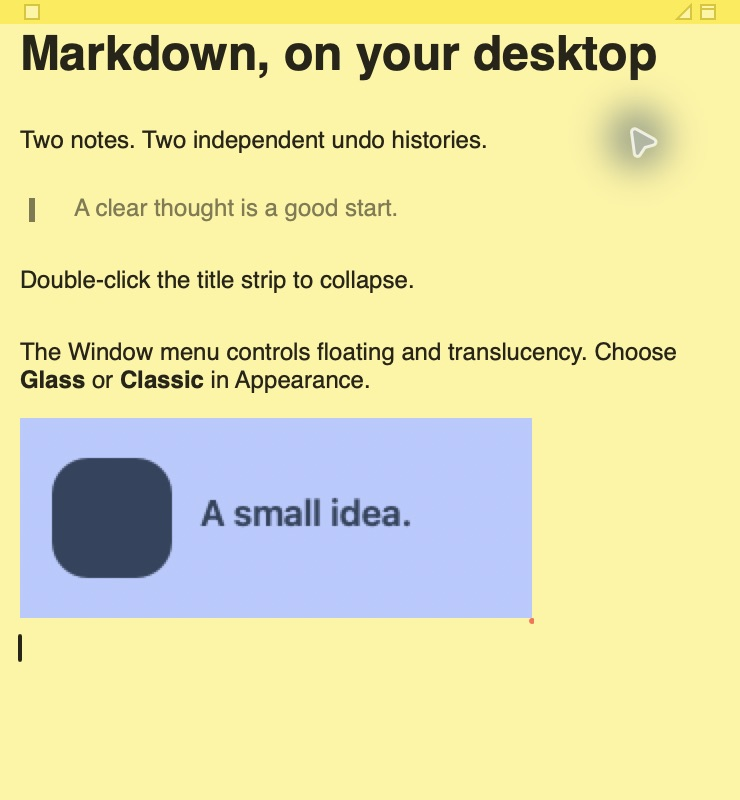
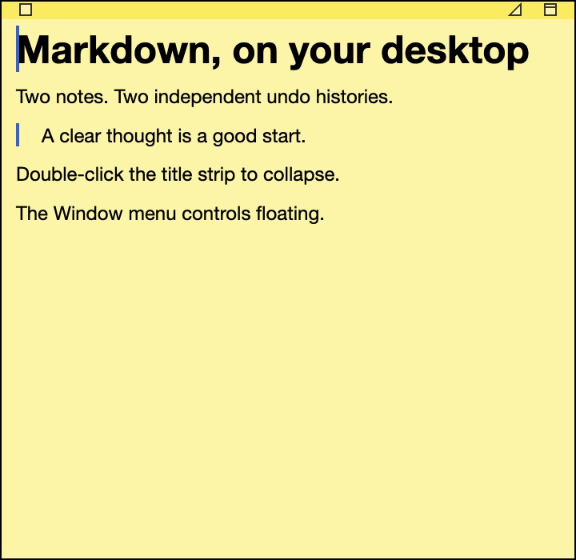
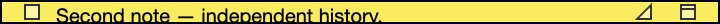

Raw permitted native app captures. Swift reference was captured earlier; body contents and capture heights differ. Rust strip follows current Swift source. This is not installed Apple Stickies exterior-frame evidence or complete editor pixel parity.


